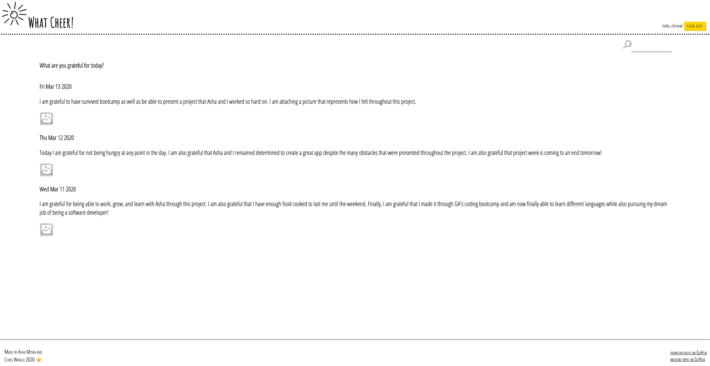

What Cheer
What Cheer is a gratitude journal. Gratitude journaling has shown an ability to improve the author’s happiness and life satisfaction, reduce stress levels, and reduce depressive symptoms. What Cheer features full CRUD functionality on both the front and back end, authentication, authorization using JWT and the Django REST framework. Django unit tests were also utilized in the making of this application. It is also worth mentioning that this application was completed with the help of a fellow classmate. We pair programmed almost exclusively throughout this project. What Cheer was created utilizing the MVC design pattern as well as separation of concern architecture, rather than the typical monolithic style of architecture.
To build the front end, my partner and I utilized React, React Router, and React Hooks. Special consideration was made into creating a thoughtful and responsive design.
To build the back end, my partner and I utilized Django REST framework as well as a PostgreSQL database to store the application's data. Both the front end and back end have been uploaded to Heroku.
As a side note, this application was created with only three days of practice using Python, Django, and PostgreSQL
Front End Repo Back End Repo